When designing Personal Boundaries, I imagined my zine to
be a friend to the reader, providing them with confidence to set
their boundaries. For a reader in the year 2022, I think this word
is about nurturing respect towards ourselves. This entails
recognizing our values and how we want to be treated, and actively
listening to our body’s needs. With the changes in our lifestyle
that were brought about by the pandemic, I think it is especially
crucial to reflect on whether or not our personal boundaries are
acknowledged and what we can do to protect them.
The zine is polyvocal, gathering the voices and stories from many
sources. The first spread features the definition of “personal
boundaries” from Wikipedia, a democratic platform. The second spread
shows my thoughts on setting boundaries, along with tips on being
assertive from Chantalle Blikman. The third spread presents a poem
by July Westhale called “On the Beauty of Setting Boundaries.” I
fell in love with this poem upon doing my research on boundaries.
And finally, the back page of the zine is a poster that I designed
that encapsulates the theme of the zine.
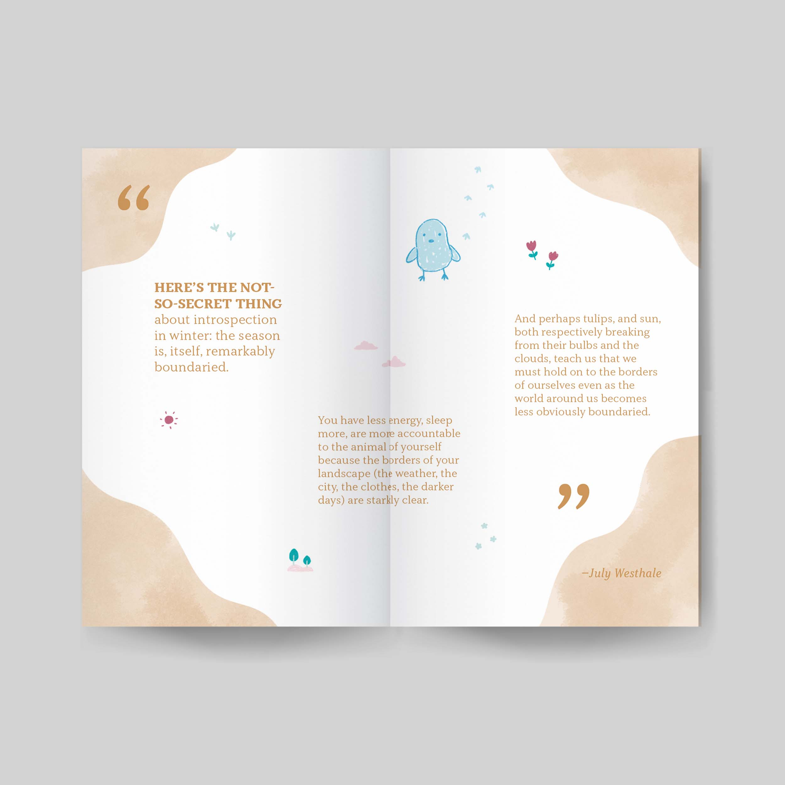
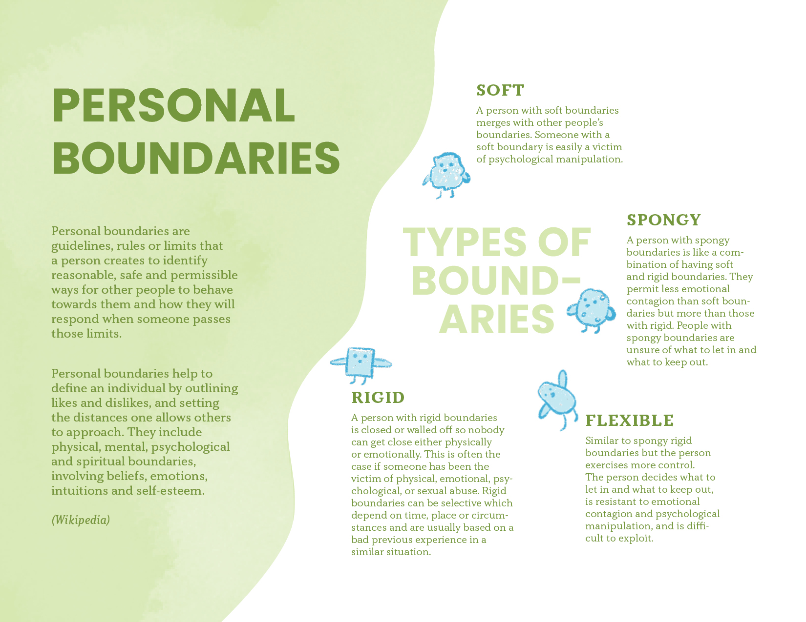
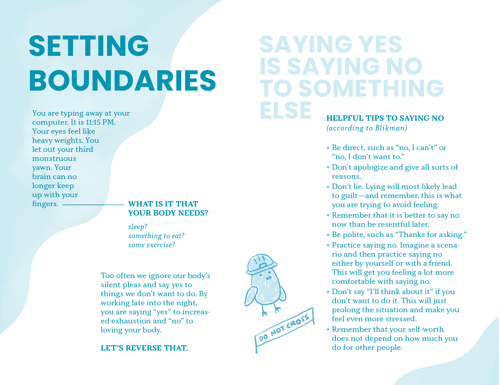
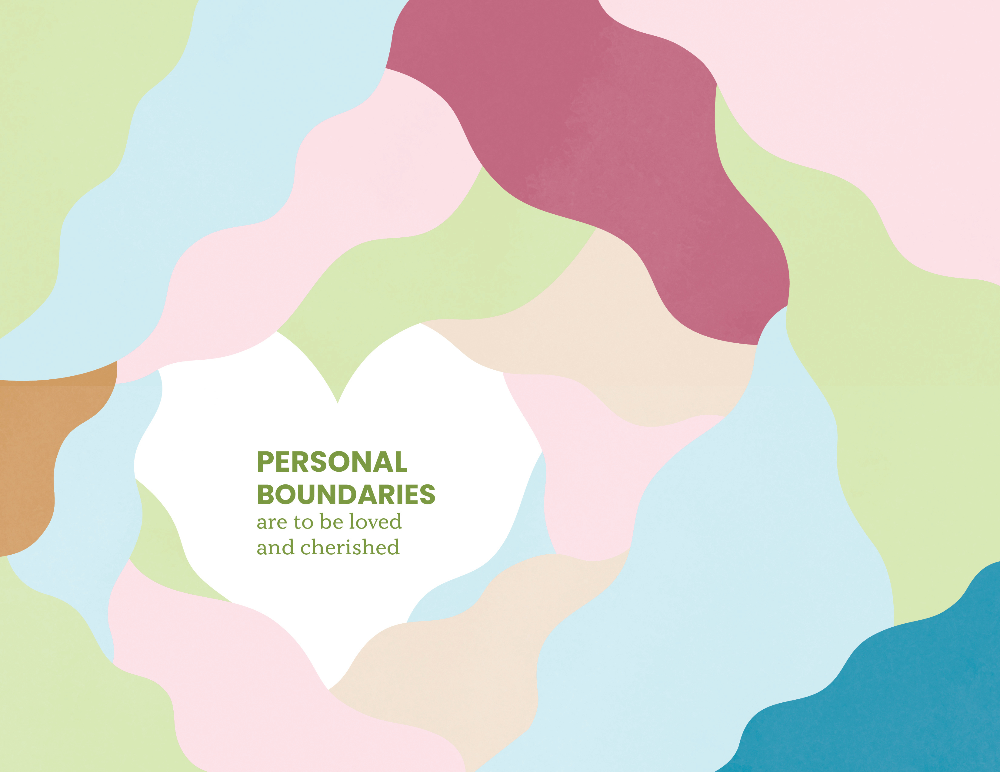
Date
August 2021
Project
Zine
Tools
Zine design: InDesign
Illustrations: Procreate
Product Specifications
There are 8 pages in total (including the cover and back pages). The
page size is 2.75 x 4.25 inches. The printed zine can unfold into
one large piece of paper. When flipped, the verso is 11 x 8.5
inches.
 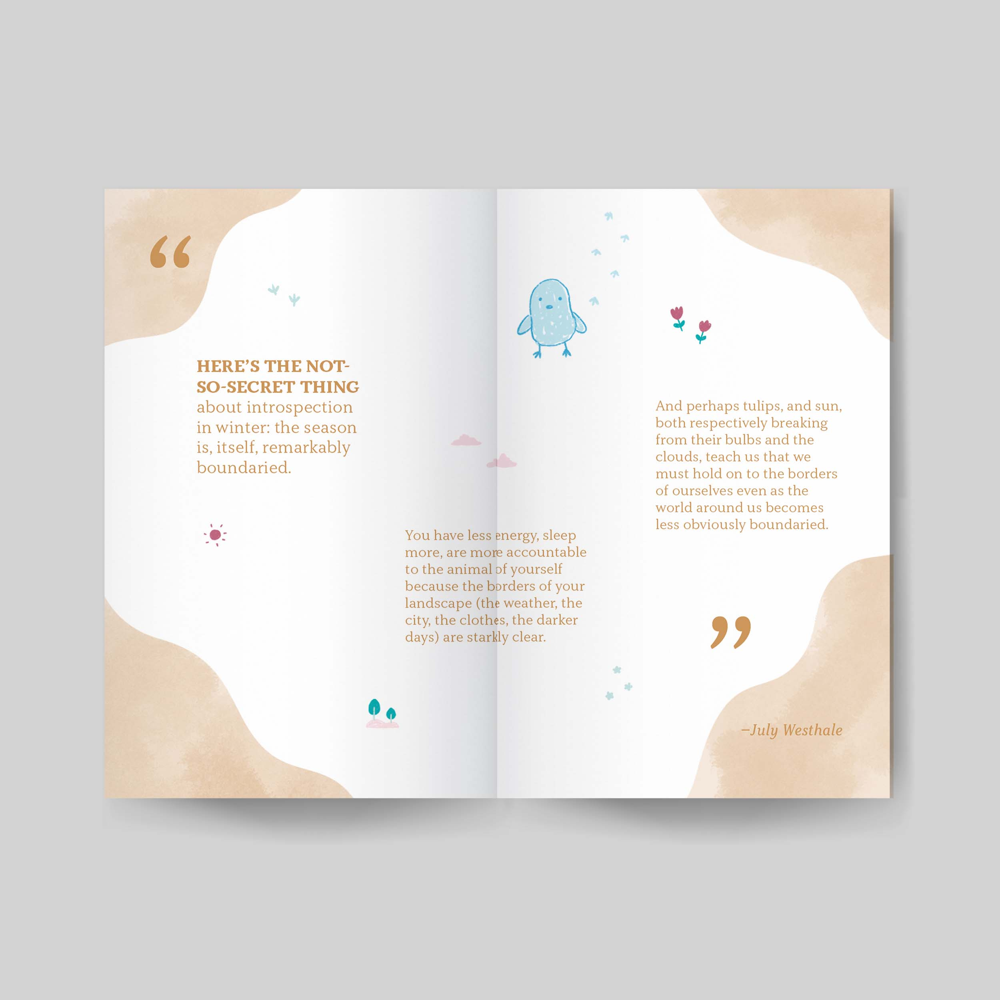
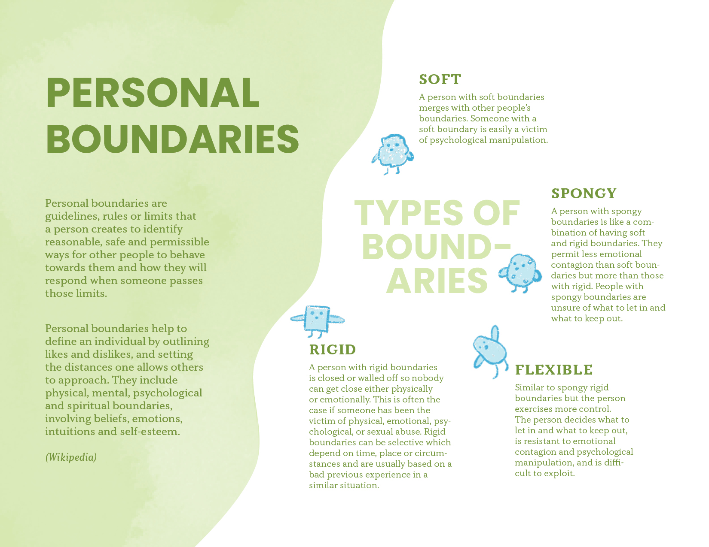
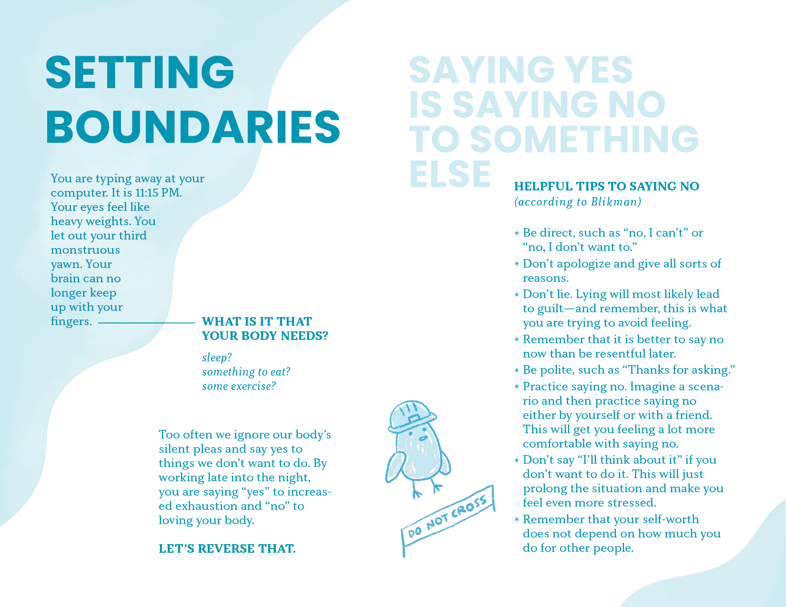
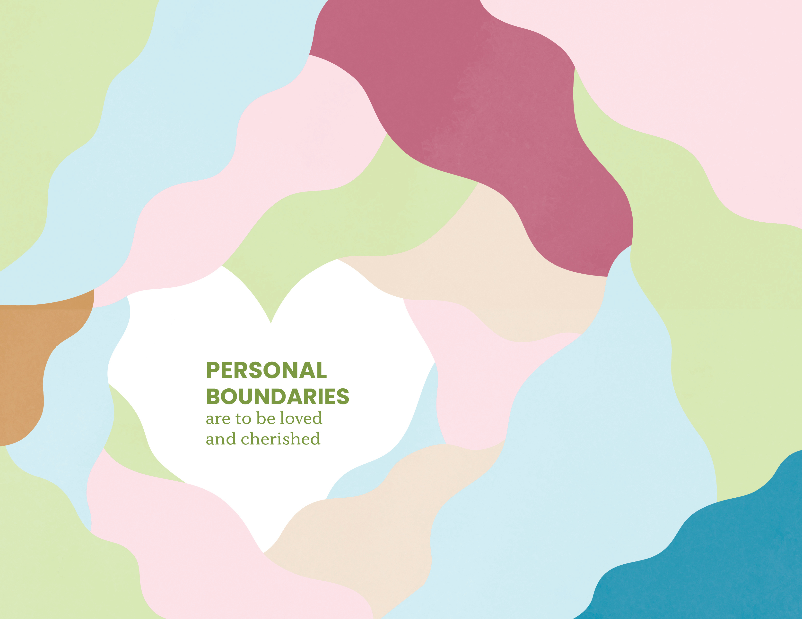
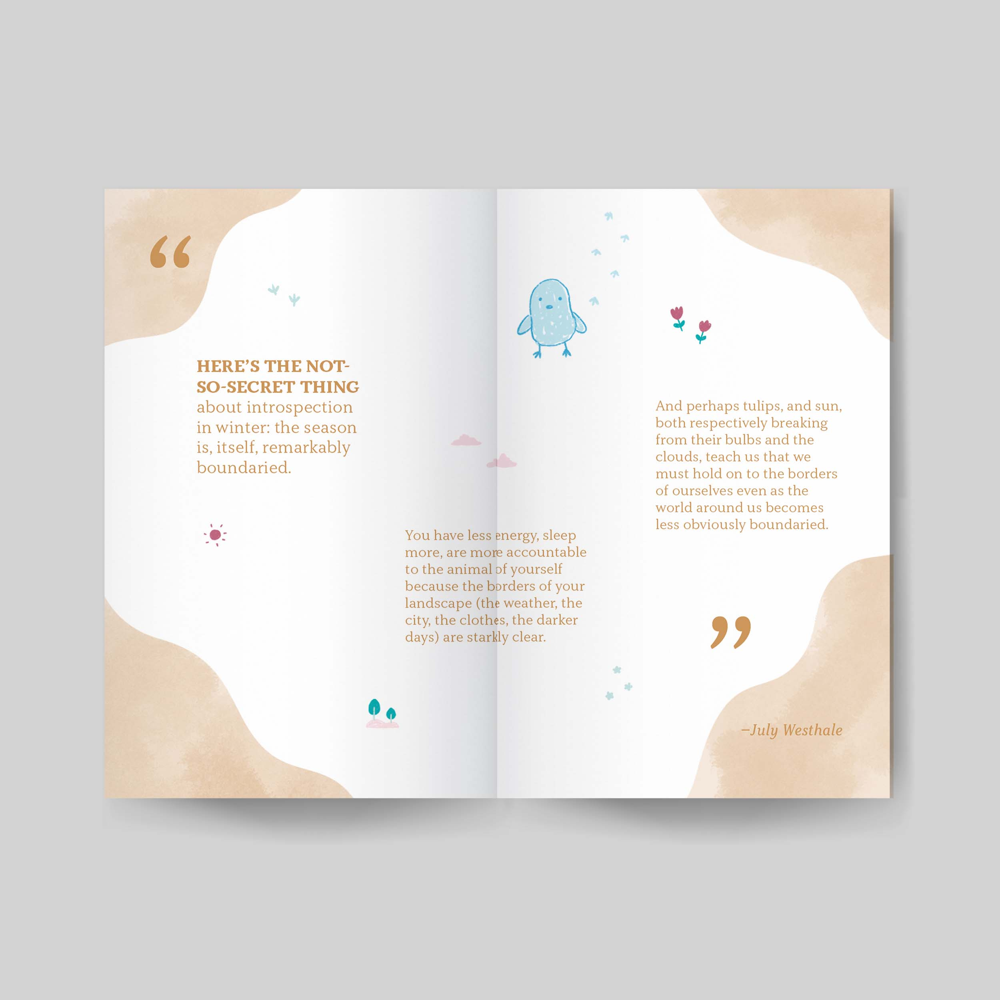
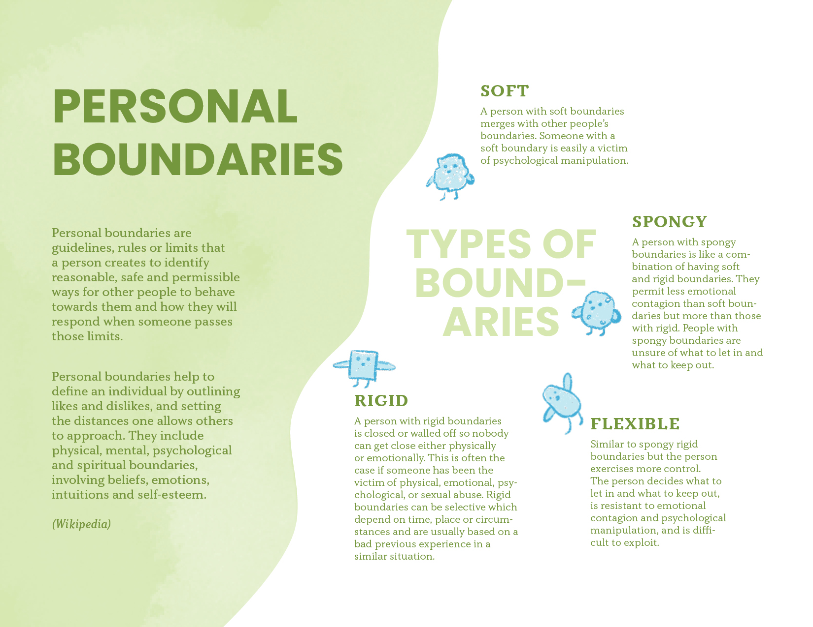
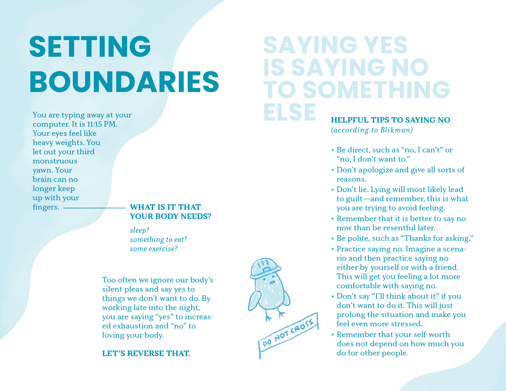
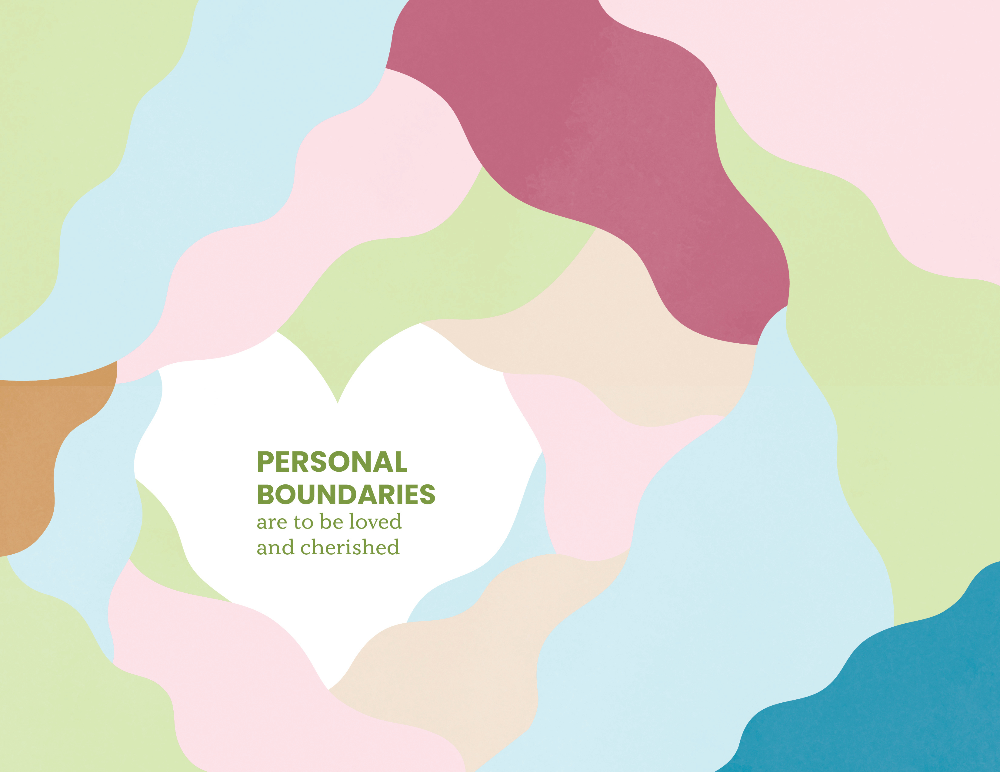